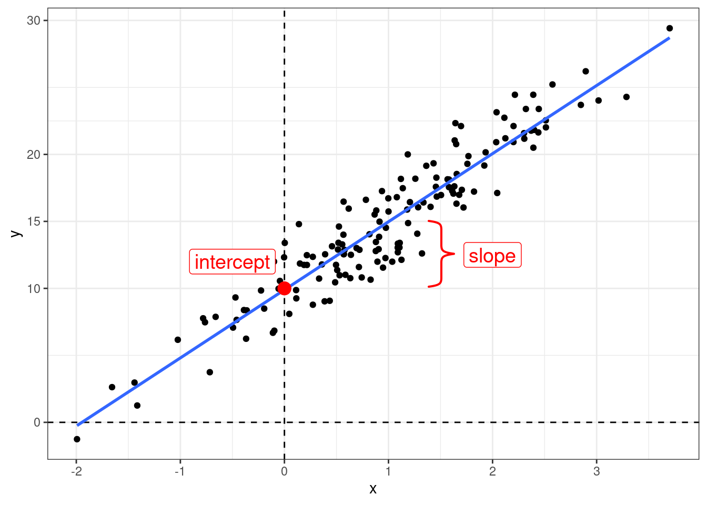
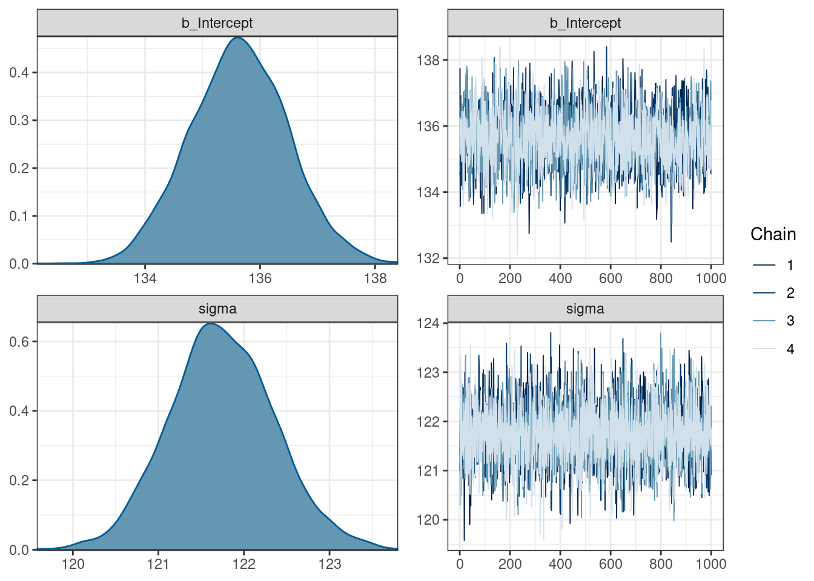
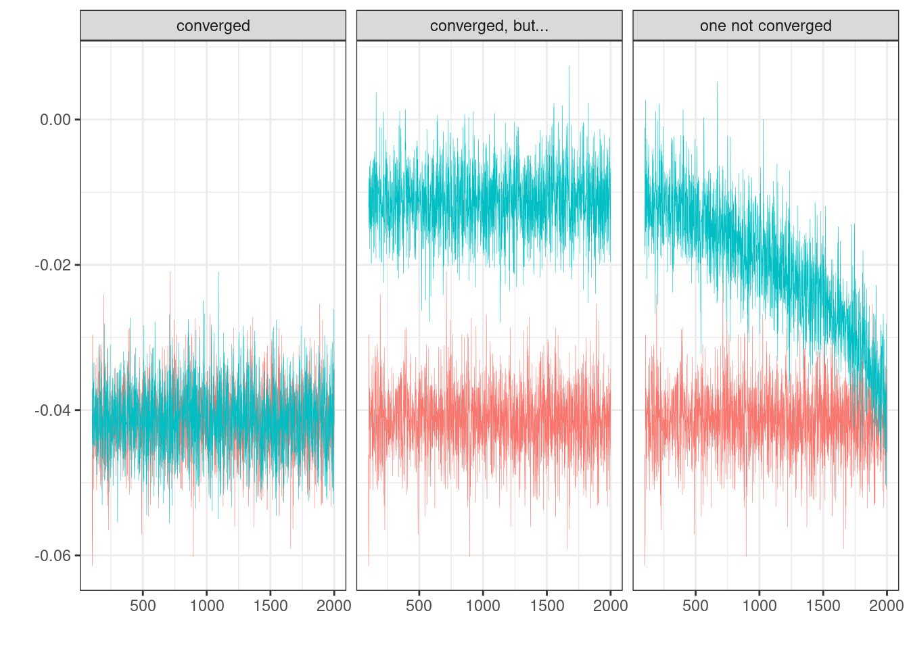
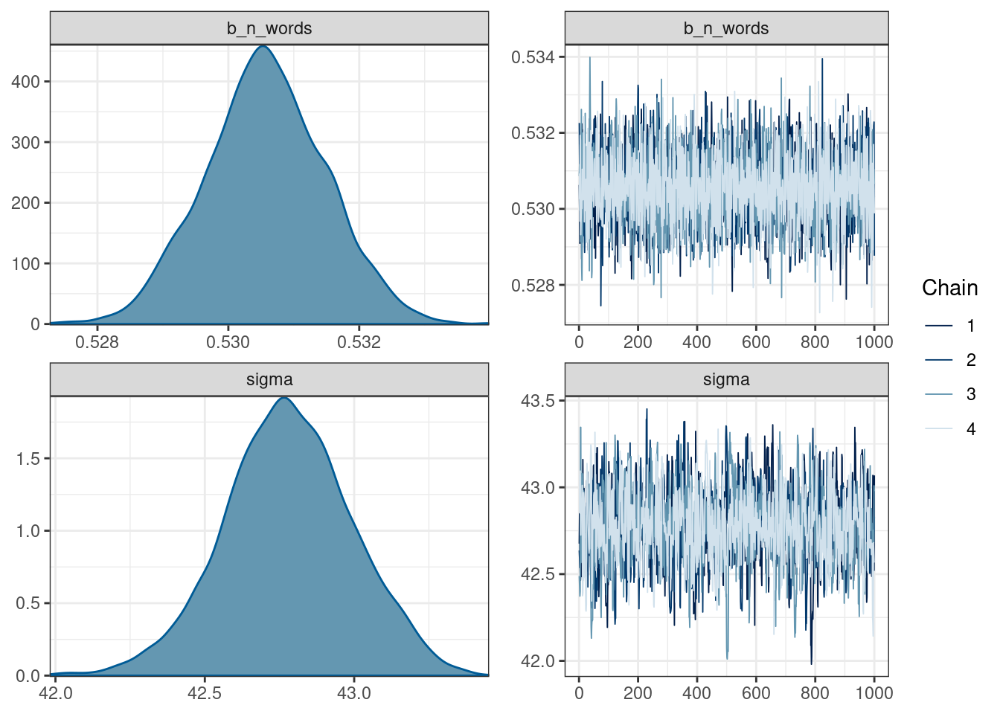
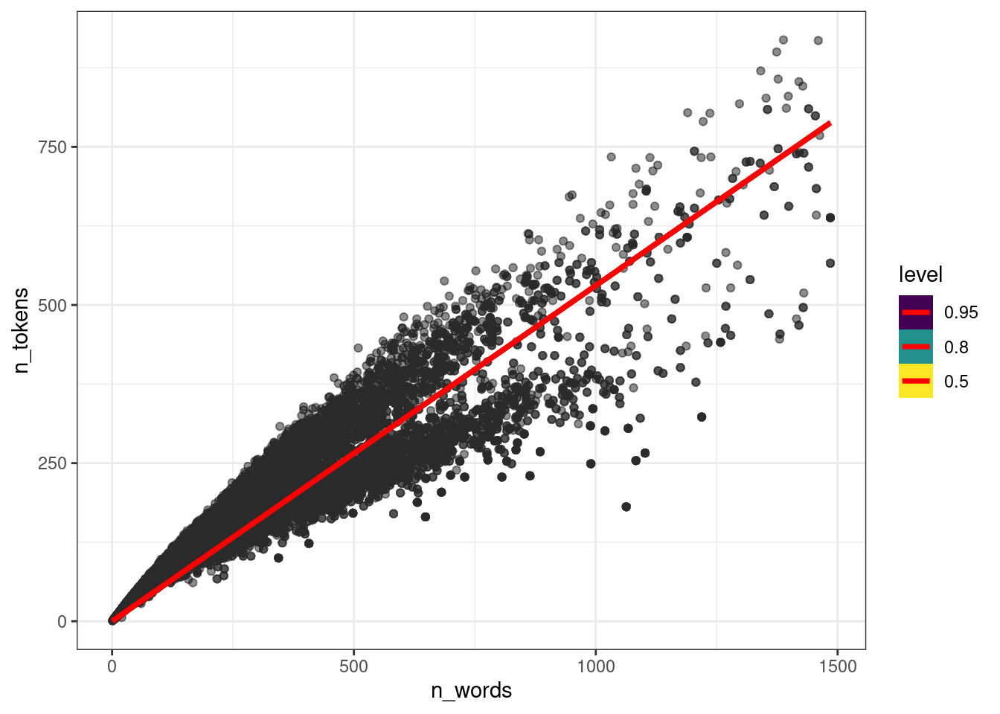
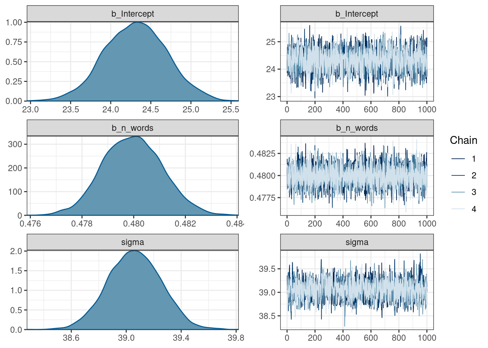
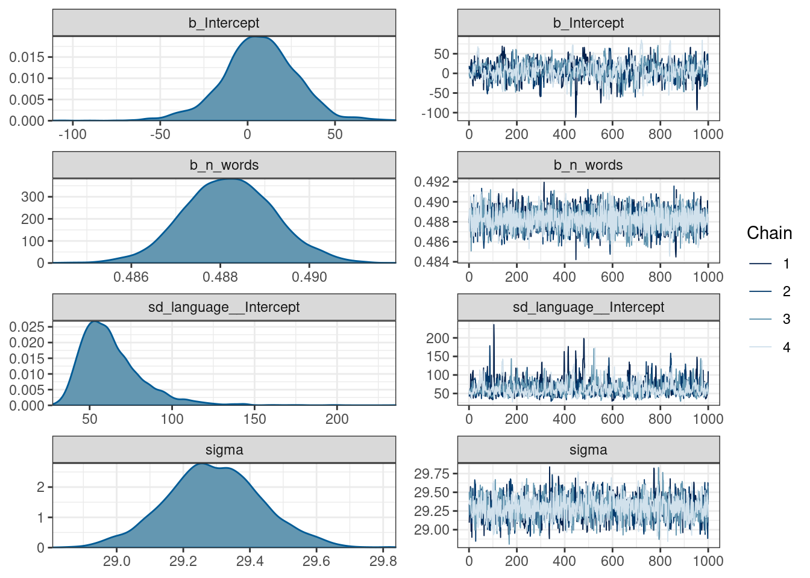
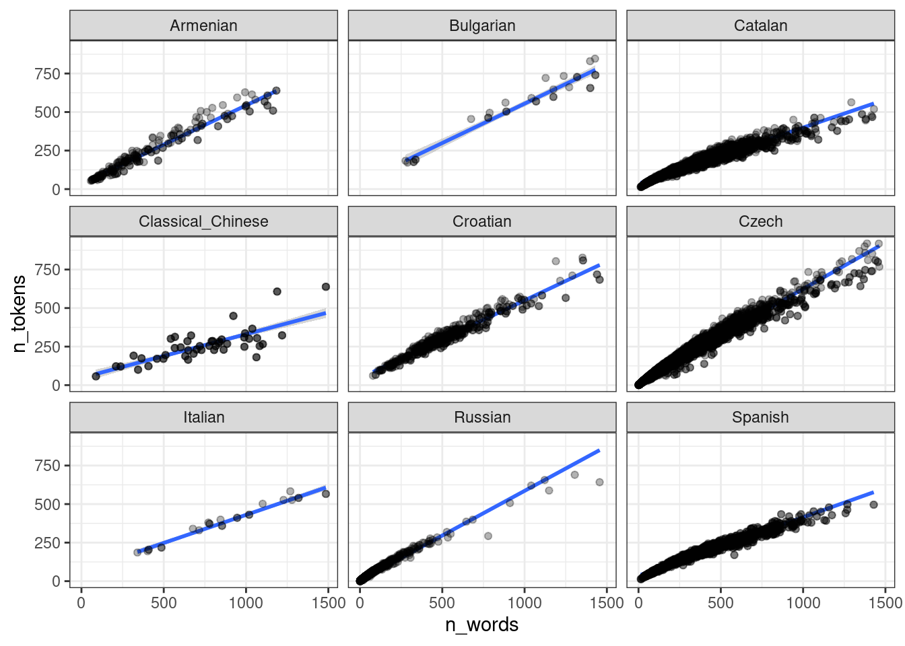
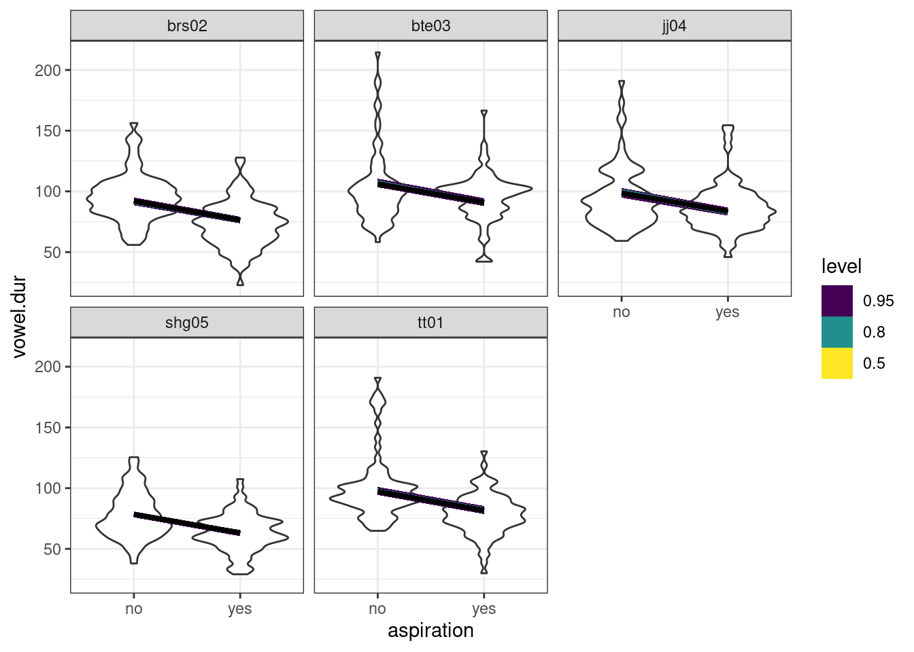

11 Байесовский регрессионный анализ
library(tidyverse)11.1 Основы регрессионного анализа

Когда мы используем регрессионный анализ, мы пытаемся оценить два параметра:
- свободный член (intercept) – значение \(y\) при \(x = 0\);
- угловой коэффициент (slope) – изменение \(y\) при изменении \(x\) на одну единицу.
\[y_i = \hat{\beta_0} + \hat{\beta_1}\times x_i + \epsilon_i\]
Причем, иногда мы можем один или другой параметр считать равным нулю.
При этом, вне зависимости от статистической школы, у регрессии есть свои ограничения на применение:
- линейность связи между \(x\) и \(y\);
- нормальность распределение остатков \(\epsilon_i\);
- гомоскидастичность — равномерность распределения остатков на всем протяжении \(x\);
- независимость переменных;
- независимость наблюдений друг от друга.
11.2 brms
Для анализа возьмем датасет, который я составил из UD-корпусов и попробуем смоделировать связь между количеством слов в тексте и количеством уникальных слов (закон Хердана-Хипса).
ud <- read_csv("https://raw.githubusercontent.com/agricolamz/udpipe_count_n_words_and_tokens/master/filtered_dataset.csv")
glimpse(ud)Rows: 20,705
Columns: 5
$ doc_id <chr> "KR1d0052_001", "KR1d0052_002", "KR1d0052_003", "KR1d0052_…
$ n_words <dbl> 3516, 2131, 4927, 4884, 4245, 5027, 3406, 2202, 2673, 2300…
$ n_tokens <dbl> 842, 546, 869, 883, 737, 1085, 494, 443, 573, 578, 660, 87…
$ language <chr> "Classical_Chinese", "Classical_Chinese", "Classical_Chine…
$ corpus_code <chr> "Kyoto", "Kyoto", "Kyoto", "Kyoto", "Kyoto", "Kyoto", "Kyo…Для начала, нарушим кучу ограничений на применение регрессии и смоделируем модель для вот таких вот данных, взяв только тексты меньше 1500 слов:
ud %>%
filter(n_words < 1500) ->
ud
ud %>%
ggplot(aes(n_words, n_tokens))+
geom_point()
11.2.1 Модель только со свободным членом
library(brms)
parallel::detectCores()[1] 16n_cores <- 15 # parallel::detectCores() - 1
get_prior(n_tokens ~ 1,
data = ud)Вот модель с встроенными априорными распределениями:
fit_intercept <- brm(n_tokens ~ 1,
data = ud,
cores = n_cores,
refresh = 0,
silent = TRUE)При желании встроенные априорные расспеределения можно не использовать и вставлять в аргумент prior априорные распределения по вашему желанию.
fit_intercept Family: gaussian
Links: mu = identity; sigma = identity
Formula: n_tokens ~ 1
Data: ud (Number of observations: 20282)
Draws: 4 chains, each with iter = 2000; warmup = 1000; thin = 1;
total post-warmup draws = 4000
Population-Level Effects:
Estimate Est.Error l-95% CI u-95% CI Rhat Bulk_ESS Tail_ESS
Intercept 135.63 0.85 133.98 137.33 1.00 2636 2457
Family Specific Parameters:
Estimate Est.Error l-95% CI u-95% CI Rhat Bulk_ESS Tail_ESS
sigma 121.74 0.61 120.58 122.99 1.00 4568 2739
Draws were sampled using sampling(NUTS). For each parameter, Bulk_ESS
and Tail_ESS are effective sample size measures, and Rhat is the potential
scale reduction factor on split chains (at convergence, Rhat = 1).plot(fit_intercept)
11.2.2 Проверка сходимости модели
Вы пострили регрессию, и самый простой способ проверить сходимость это визуально посмотреть на цепи:

Дальнейший фрагемнт взят из документации Stan (Stan — это один из популярнейших сэмплеров для MCMC и многого другого, который используется в brms).
11.2.2.1 R-hat
R-hat – это диагностика сходимости, которая сравнивает оценку модели, которая получается внутри цепи и между цепями (введена в (Gelman and Rubin 1992)). Если цепи не перемешались (например, если нет согласия внутри цепи и между цепями) R-hat будет иметь значение больше 1. Собственно для этого рекоммендуется запускать по-крайней мере 4 цепи. Stan возвращает что-то более сложное, что называется maximum of rank normalized split-R-hat и rank normalized folded-split-R-hat, однако мы не будем в этом разбиратсья, отсылаю к статье или к посту в блоге одного из авторов с объяснением.
Самое главное: \(\hat{R} \leq 1.01\) – значит проблем со сходмиостью цепей не обнаружено.
11.2.2.2 Effective sample size (ESS)
Effective sample size (ESS) — это оценка размера выборки достаточной для того, чтобы получить результат такой же точности при помощи случайной выборки из генеральной совокупности. Эту меру используют для оценки размера выборки, в анализе временных рядов и в байесовской статистике. Так как в байесовской статистике мы используем сэмпл из апостериорного распределения для статистического вывода, а значения в цепях коррелируют, то ESS пытается оценить, сколько нужно независимых сэмплов, чтобы получить такую же точность, что и результат MCMC. Чем выше ESS – тем лучше.
Stan возвращает две меры:
Bulk-ESS
Roughly speaking, the effective sample size (ESS) of a quantity of interest captures how many independent draws contain the same amount of information as the dependent sample obtained by the MCMC algorithm. Clearly, the higher the ESS the better. Stan uses R-hat adjustment to use the between-chain information in computing the ESS. For example, in case of multimodal distributions with well-separated modes, this leads to an ESS estimate that is close to the number of distinct modes that are found.
Bulk-ESS refers to the effective sample size based on the rank normalized draws. This does not directly compute the ESS relevant for computing the mean of the parameter, but instead computes a quantity that is well defined even if the chains do not have finite mean or variance. Overall bulk-ESS estimates the sampling efficiency for the location of the distribution (e.g. mean and median).
Often quite smaller ESS would be sufficient for the desired estimation accuracy, but the estimation of ESS and convergence diagnostics themselves require higher ESS. We recommend requiring that the bulk-ESS is greater than 100 times the number of chains. For example, when running four chains, this corresponds to having a rank-normalized effective sample size of at least 400.
Tail ESS
Tail-ESS computes the minimum of the effective sample sizes (ESS) of the 5% and 95% quantiles. Tail-ESS can help diagnosing problems due to different scales of the chains and slow mixing in the tails. See also general information about ESS above in description of bulk-ESS.
{kind=link}
11.2.4 Модель только с угловым коэффициентом
get_prior(n_tokens ~ n_words+0,
data = ud)fit_slope <- brm(n_tokens ~ n_words+0,
data = ud,
cores = n_cores,
refresh = 0,
silent = TRUE)fit_slope Family: gaussian
Links: mu = identity; sigma = identity
Formula: n_tokens ~ n_words + 0
Data: ud (Number of observations: 20282)
Draws: 4 chains, each with iter = 2000; warmup = 1000; thin = 1;
total post-warmup draws = 4000
Population-Level Effects:
Estimate Est.Error l-95% CI u-95% CI Rhat Bulk_ESS Tail_ESS
n_words 0.53 0.00 0.53 0.53 1.00 4312 3108
Family Specific Parameters:
Estimate Est.Error l-95% CI u-95% CI Rhat Bulk_ESS Tail_ESS
sigma 42.78 0.21 42.34 43.20 1.01 1185 1108
Draws were sampled using sampling(NUTS). For each parameter, Bulk_ESS
and Tail_ESS are effective sample size measures, and Rhat is the potential
scale reduction factor on split chains (at convergence, Rhat = 1).plot(fit_slope)
Давайте посмотрим на предсказания модели в том, виде, в каком их может интерпретировать не специалист по байесовской статистике:
library(tidybayes)
ud %>%
add_epred_draws(fit_slope, ndraws = 50) %>%
ggplot(aes(n_words, n_tokens))+
geom_point(alpha = 0.01)+
stat_lineribbon(aes(y = .epred), color = "red") 
11.2.5 Модель с угловым коэффициентом и свободным членом
get_prior(n_tokens ~ n_words,
data = ud)fit_slope_intercept <- brm(n_tokens ~ n_words,
data = ud,
cores = n_cores, refresh = 0, silent = TRUE)fit_slope_intercept Family: gaussian
Links: mu = identity; sigma = identity
Formula: n_tokens ~ n_words
Data: ud (Number of observations: 20282)
Draws: 4 chains, each with iter = 2000; warmup = 1000; thin = 1;
total post-warmup draws = 4000
Population-Level Effects:
Estimate Est.Error l-95% CI u-95% CI Rhat Bulk_ESS Tail_ESS
Intercept 24.31 0.39 23.55 25.08 1.00 2478 2883
n_words 0.48 0.00 0.48 0.48 1.00 5171 3080
Family Specific Parameters:
Estimate Est.Error l-95% CI u-95% CI Rhat Bulk_ESS Tail_ESS
sigma 39.06 0.19 38.69 39.43 1.00 2198 2141
Draws were sampled using sampling(NUTS). For each parameter, Bulk_ESS
and Tail_ESS are effective sample size measures, and Rhat is the potential
scale reduction factor on split chains (at convergence, Rhat = 1).plot(fit_slope_intercept)
ud %>%
add_epred_draws(fit_slope_intercept, ndraws = 50) %>%
ggplot(aes(n_words, n_tokens))+
geom_point(alpha = 0.01)+
stat_lineribbon(aes(y = .epred), color = "red") 11.2.6 Модель со смешанными эффектами
В данных есть группировка по языкам, которую мы все это время игнорировали. Давайте сделаем модель со смешанными эффектами:
get_prior(n_tokens ~ n_words+(1|language),
data = ud)fit_mixed <- brm(n_tokens ~ n_words + (1|language),
data = ud,
cores = n_cores, refresh = 0, silent = TRUE)fit_mixed Family: gaussian
Links: mu = identity; sigma = identity
Formula: n_tokens ~ n_words + (1 | language)
Data: ud (Number of observations: 20282)
Draws: 4 chains, each with iter = 2000; warmup = 1000; thin = 1;
total post-warmup draws = 4000
Group-Level Effects:
~language (Number of levels: 9)
Estimate Est.Error l-95% CI u-95% CI Rhat Bulk_ESS Tail_ESS
sd(Intercept) 63.39 19.35 37.92 111.06 1.00 813 1207
Population-Level Effects:
Estimate Est.Error l-95% CI u-95% CI Rhat Bulk_ESS Tail_ESS
Intercept 6.81 21.45 -38.09 46.92 1.01 689 876
n_words 0.49 0.00 0.49 0.49 1.00 3830 2578
Family Specific Parameters:
Estimate Est.Error l-95% CI u-95% CI Rhat Bulk_ESS Tail_ESS
sigma 29.29 0.14 29.00 29.58 1.00 2212 1727
Draws were sampled using sampling(NUTS). For each parameter, Bulk_ESS
and Tail_ESS are effective sample size measures, and Rhat is the potential
scale reduction factor on split chains (at convergence, Rhat = 1).plot(fit_mixed)
ud %>%
add_epred_draws(fit_mixed, ndraws = 50) %>%
ggplot(aes(n_words, n_tokens))+
geom_point(alpha = 0.01)+
stat_lineribbon(aes(y = .epred), color = "red") +
facet_wrap(~language)То, что получилось учитывает общий эффект всех языков: посмотрите на каталанский. Если построить модель по каждому языку, то получится совсем другая картина:
ud %>%
ggplot(aes(n_words, n_tokens))+
geom_smooth(method = "lm") +
geom_point(alpha = 0.3)+
facet_wrap(~language)
В работе (Coretta 2016) собраны данные
длительности исландских гласных. Используя байесовскую регрессию с
априорными распределениями по умолчанию, смоделируйте длительность
гласного (vowel.dur) в зависимости от аспирированности
(aspiration) учитывая эффект носителя. Визуализируйте
результаты модели.
